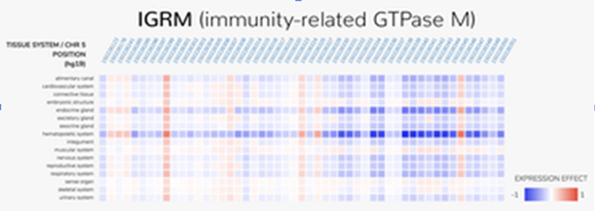

악성 돌연변이: 연구원들은 인체의 다른 조직 시스템에 걸친 유전적 돌연변이의 영향을 예측하기 위해 ExPecto라고 불리는 새로운 딥러닝 프레임워크를 만들었다. 위의 표는 크론병, 궤양성 대장염, 일반 염증성 장 질환과 관련된 면역 반응에 관여하는 유전자인 면역 관련 GTPase 계열 M(IRGM)의 발현 결과를 보여준다. 조직 시스템이 수직으로 나열되는 동안 가능한 돌연변이의 하위 집합은 수평으로 나열됩니다. 빨간색은 ExPecto가 주어진 시스템에서 IRGM의 발현 증가를 예측하는 돌연변이를 나타내고, 파란색은 예상되는 발현 감소를 나타낸다.
